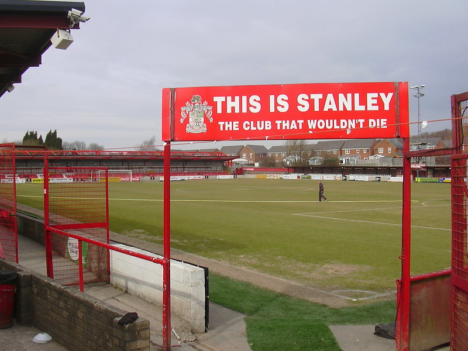

Curiosità
"This is Stanley. The club that wouldn't die". Così campeggia la scritta su un cartellone all'entrata del Crown Ground di Accrington, una cittadina di 35.000 abitanti nel Lancashire, regione situata nella parte settentrionale dell'Inghilterra. In effetti questa affermazione, che suona come un grido di battaglia, ha un fondo di verità. Nel 1878 tutto ebbe inizio,con l'originaria fondazione del club sotto il nome di Accrington F.C. , avvenuta in seguito a una riunione in un pub del paese effettuata nel 1876. Inoltre,fatto ancora più curioso per un club di certe dimensioni,è stato uno dei dodici membri fondatori della Football League. Dopo qualche stagione all'insegna dell'anonimità,con un miglior piazzamento nel campionato che corrisponde a un sesto posto,al termine della stagione 1892-1893 fu retrocessa nella Lancashire League e detenne un record: fu la prima squadra inglese che dovette affrontare una retrocessione vera e propria. Da qui partì un calvario costellato di problemi finanziari che portarono all'apparente fallimento del club,che invece continuò a giocare fuori dalle leghe principali fino al 1921,quando l'Accrington Stanley( e non più l'Accrington F.C. ) riuscì finalmente a reiscriversi alla Football League in cui militò dal 1921 fino al 1966. La permanenza nella divisione però non fu assolutamente semplice ma,anzi,fu ostacolata da tantissimi problemi finanziari che la fecero scalare e salire di divisione parecchi anni di seguito. Dopo molteplici problemi riuscirono ad essere accettati nella Lancashire Combination Division Two,una lega calcistica di livello assolutamente inferiore,corrispondente a una sorta di campionato regionale. Grazie a degli investitori riuscì a sostentarsi e ad ottenere una promozione in Lancashire Combination Division One,ma l'anno successivo retrocesse di nuovo e continuò a partecipare a questa lega per 4 anni,per poi sparire definitivamente nel 1966. Nel 1968 dalle ceneri di questo club fantasma e perennemente inseguito dall'ombra del fallimento definitivo e dalla mancanza di fondi ebbe origine l'Accrington Stanley F.C., che è il club ufficiale di cui sto trattando in questo primo episodio.
E' da un incontro al Bold Street Working Men's Club che ebbe inizio il lungo cammino dei nuovi Accies,costellato come sempre da mille impedimenti,a cui però questa volta la squadra del Lancashire riuscì a fare fronte e finalmente,nel 1995 arrivò la salvezza di questo piccolo club. Eric Whalley,un imprenditore locale,decide di prendere le redini del club per cercare di coronare il sogno dei tifosi: ritornare in Football League. Una delle prime mosse per raggiungere questo obiettivo fu reclutare un nuovo allenatore,John Coleman. Questo nome non dirà nulla a nessuno perchè in effetti anche da calciatore ha militato solo in divisioni minori,finendo la sua carriera calcistica e iniziando quella da allenatore con l'Ashton United,squadra da cui approderà ad Accrington. Da qui le sorti della squadra presero una via finalmente inaspettata; dopo anni immemori di permanenza nelle leghe minori finalmente ci fu una risalita. Precedentemente il proprio talento Brett Ormerod venne ceduto al Southampton con clausola di rivendita,la quale fu riscattata quando venne venduto al Blackpool,nella stagione 1997/1998. Grazie a quelle £50.000 ricavate da questa operazione Whalley riuscì a finanziare l'ingaggio del nuovo allenatore e ad alimentare le possibilità di una risalita delle varie divisioni. Nella stagione 2002-2003 gli Accies riuscirono a vincere la Northern Premier League e ad essere ammessi nella Football Conference,la lega antecedente alla Football League. Nella stagione 2005-2006 poi,finalmente,l'Accrington Stanley F.C. riuscì ad approdare nuovamente in Football League,avendo concluso la National League con 91 punti,ottenendo una promozione storica. Da quel momento il club navigò sempre nelle ultime posizioni della League Two( la nostra Serie D). Nel 2012 John Coleman fu sollevato dall'incarico di allenatore della squadra e nel 2014 il salvatore della squadra Eric Whalley morì. A lui si susseguì la figura importantissima di Peter Marsden,un finanziere di Londra,che guidò la squadra verso uno storico obiettivo,la promozione in League One.
Insieme alla dolorosa dipartita di Whalley ci fu anche una buona notizia. Dopo due esperienze in Inghilterra e una in Irlanda,Coleman ritornò a capo degli Accies e permise all'Accrington di continuare a giocare per altre 4 stagioni in League Two,poi il miracolo. La stagione 2017/2018 fu una vera e propria sorpresa,nessuno avrebbe dato un risultato simile alla vigilia dell'inizio della stagione,ma finalmente l'opera è stata completata. L'Accrington Stanley F.C. dopo anni di sofferenza,dopo più di un secolo di difficoltà e zero certezze,termina in testa il campionato di League Two e approda in League One,dopo una vittoria per 2-0 contro lo Yeovil Town. Ad oggi sono due le stagioni che ha disputato in questo campionato,ottenendo anche successi incredibili e riuscendo ad ottenere sempre la salvezza in maniera tranquilla. Che sia una favola destinata ad avere un ancora più lieto fine? Lo scopriremo solo vivendo.